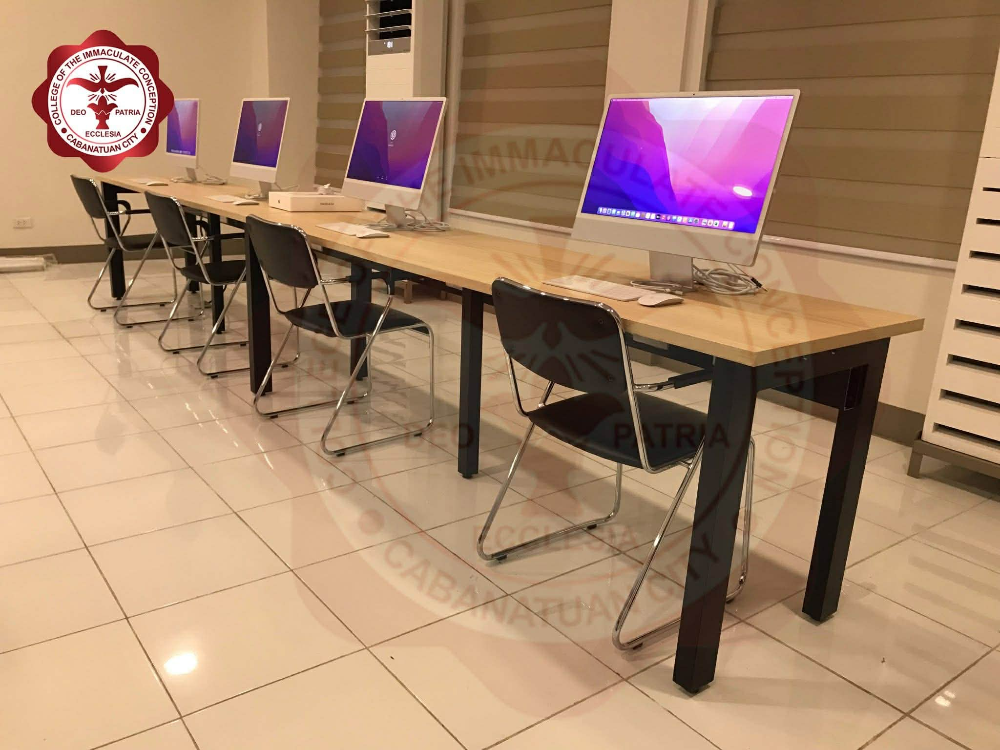
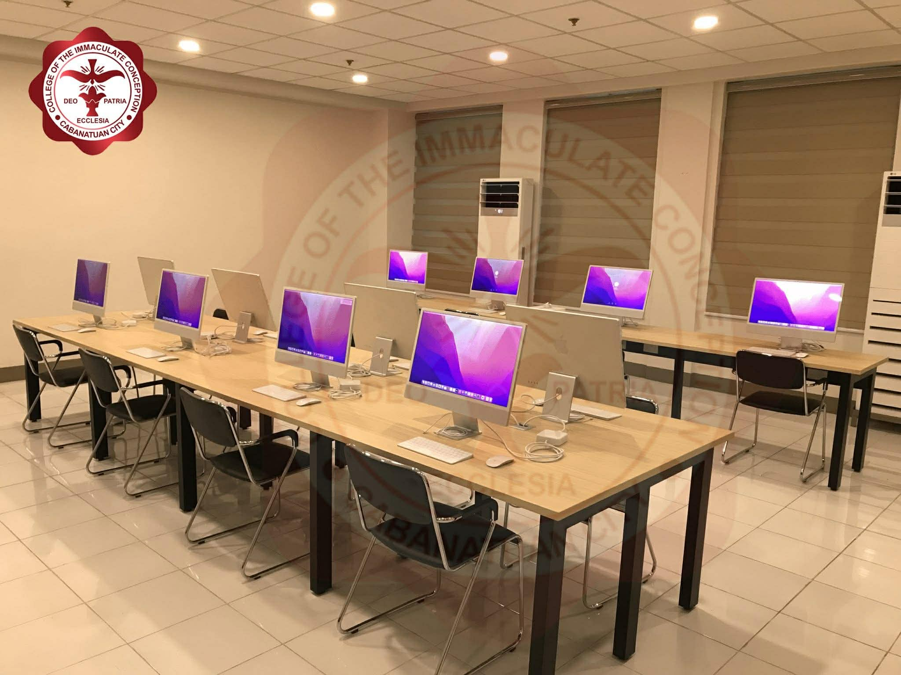

BUILD YOUR OWN WORLDS!
The College of the Immaculate Conception offers a Bachelor of Science in Information Technology (BSIT) program with a specialization in Game Development, designed to develop both technical expertise and creative skills. The program combines fundamental IT subjects such as programming, database management, networking, and system analysis with specialized courses in game design, animation, and interactive media. This allows students to build a strong foundation in technology while exploring the artistic and creative aspects of digital game creation.
Through the Game Development major, students learn the complete process of developing
games—from concept creation and storytelling to coding, testing, and deployment.
The program emphasizes hands-on learning through projects and a capstone experience,
helping students apply their knowledge in real-world scenarios. Graduates are prepared for
careers such as game developer, animator, UI/UX designer, or software developer, making them
versatile professionals ready to enter both the gaming industry and the broader field of information technology.
The Mac Laboratory is a modern learning space for CIC Information Technology (I.T.) students, equipped with the latest Mac computers. Designed to foster collaboration, it offers flexible workstations, high-speed connectivity, and on-site technical support.


The global gaming industry generates over $180 billion annually and continues to grow faster than film and music combined. Skilled game developers are among the most sought-after professionals in tech.
Game development skills transfer across industries — VR, AR, simulation, film, healthcare, and education all use game engines. A degree in game development opens doors far beyond entertainment.
Game development is where art meets engineering. You will design characters, build worlds, write logic, and compose experiences — making it one of the most creatively fulfilling tech disciplines available.
Games are built by teams. You will develop real-world collaboration skills working alongside designers, artists, and programmers — preparing you for a professional studio environment from day one.
From your first semester you will be building actual games using industry-standard tools like Unity and Unreal Engine. CIC's Mac Laboratory provides the hardware and software to bring your ideas to life.
Game developers enjoy competitive salaries globally. Whether you join a studio, freelance, or launch your own indie game, this major equips you with skills the market consistently rewards.